3D Volumes: Projections and Descriptors
From a volume to 2D images (projections and slices, after which every 2D library applies) and to numbers (the features a classifier reads). The example phantom and the slice viewers are those of 3D Volumes: CT, MRI and Microscopy: drag a row's slider to move through the slices.
| volume | mask = vol ≥ 0.5 | nodule = vol ≥ 0.85 | |
|---|---|---|---|
| z 14/28 | |||
| y 14/28 | |||
| x 14/28 |
3D → 2D: projections and slices
Each operator exists for the three axes (_z, _y, _x) and returns a 2D image: a _z result is (y, x), a _y result (x, z), a _x result (y, z).
| Operator | What it returns |
|---|---|
proj_max_<a> | For each line along the axis, its brightest voxel (maximum intensity projection, MIP): bright structures show through everything. |
proj_min_<a> | The darkest voxel of each line. |
proj_mean_<a> | The mean of each line: like an X-ray. |
proj_std_<a> | Twice the standard deviation of each line: how much the line varies. |
proj_argmax_<a> | Where along the line the brightest voxel is, 0 (first slice) to 1 (last): a depth map. |
proj_max_masked_<a>(vol, mask), proj_mean_masked_<a>(vol, mask) | Max / mean over the voxels inside the mask only (0 where a line has none). |
slice_center_<a> | The middle slice. |
slice_at_<a>(vol, s) | The slice at position s (0 first, 1 last). |
slice_brightest_<a> | The slice through the brightest voxel. |
slice_centroid_<a>(vol, mask) | The slice through the mask's centre of mass. |
slice_largest_<a>(vol, mask) | The slice where the mask has the most voxels. |
The binary bundle returns 2D masks: proj_any_<a> (set where any voxel of the line is set: the silhouette), proj_all_<a> (set where all are), slice_center_<a>, slice_at_<a>(mask, s) and slice_largest_<a>. Intensity volumes are thresholded at 0.5, or with proj_any_<a>(vol, t) at t.
| Operator | _z (y, x) | _y (x, z) | _x (y, z) |
|---|---|---|---|
proj_max | |||
proj_min |  |  |  |
proj_mean | 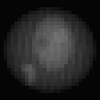 | 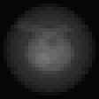 | 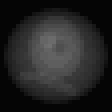 |
proj_std | 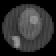 | 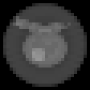 | 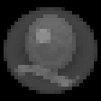 |
proj_argmax | 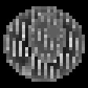 | 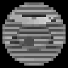 | |
proj_max_masked(vol, mask) | 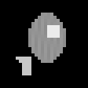 | 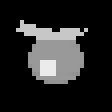 | |
proj_mean_masked(vol, mask) | 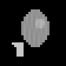 | 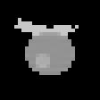 | 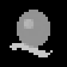 |
slice_center | |||
slice_brightest | |||
slice_centroid(vol, nodule) |  | ||
slice_largest(vol, mask) | 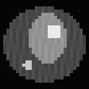 | ||
binary proj_any(mask) |  | ||
binary proj_all(mask) |  |  | |
binary slice_center(mask) |  | ||
binary slice_largest(mask) | 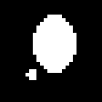 |  | 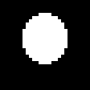 |
The MIP shows the nodule and the vessel through everything else; proj_min is uniformly dark, because every line starts and ends in air; slice_brightest cuts through the nodule; proj_argmax is a depth map (dark = near the first slice). proj_all is empty: no line crosses the mask from end to end.
Effect of the position s on slice_at_z(vol, s):
s = 0 | 0.25 | 0.5 | 0.75 | 1 |
|---|---|---|---|---|
 | 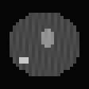 |  | 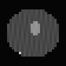 |
Effect of the threshold on proj_any_z(vol, t), and binary slice_at_z(mask, s):
proj_any_z(vol, 0.2): the body | t = 0.5: organ, nodule, vessel | t = 0.85: the nodule | slice_at_z(mask, 0.25) | (mask, 0.5) | (mask, 0.75) |
|---|---|---|---|---|---|
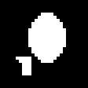 | 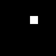 | 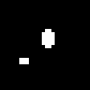 | 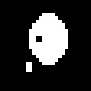 | 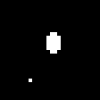 |
3D → scalar
These return one number per volume, the features a classifier reads. bundle_number_intensityStatsFromImg (quantiles, moments, entropy, Otsu…, see the descriptors page) takes volumes as well as 2D images, with the same ROI, outside and inside − outside forms. The volume bundles add the following. Mask operators take (mask), (vol) (thresholded at 0.5), (vol, t) or (mask, roi).
Shape of the whole mask (bundle_number_volumeShapeFromImg):
| Operator | What it measures |
|---|---|
vshape_fill | Fraction of the volume's voxels that are set. |
vshape_sphericity | How ball-like the mask is: surface of a ball of the same volume over the actual surface (counted as exposed voxel faces). A voxelised ball scores about 0.65, anything less compact lower: compare values with each other. |
vshape_elongation | 1 − sqrt(λ2/λ1) of the principal axes: 0 when the two longest axes are equal, towards 1 for a needle. |
vshape_flatness | 1 − sqrt(λ3/λ2): towards 1 for a plate. |
vshape_extent | Set voxels over the voxels of the bounding box: 1 for a box, about 0.52 for a ball. |
vshape_components | Number of separate objects. |
vshape_largest_fraction | Share of the set voxels in the largest object. |
vshape_cavities, vshape_cavity_fraction | Number of enclosed cavities, and cavity voxels over (set + cavity) voxels. |
vshape_centroid_y, vshape_centroid_x, vshape_centroid_z | Position of the centre of mass, 0 to 1 along each axis. |
vobjs_<d>_<a> | A descriptor d ∈ {volume (share of the voxels), sphericity, elongation, extent} of every object, aggregated with a ∈ {mean, std, min, max, median, cv (std / mean)}. E.g. vobjs_volume_max = the largest object's share. |
Size distribution (bundle_number_volumeGranulometryFromImg):
| Operator | What it measures |
|---|---|
vgran_open_r1 … vgran_open_r4 | Fraction of the mask that survives an opening by a ball of radius 1–4: the parts a ball of that size can reach while staying inside. High = thick structures, low = thin ones. |
vgran_open_bg_r1 … vgran_open_bg_r4 | The same for the background: low when the background is made of narrow gaps. |
vgran_thickness_mean, vgran_thickness_max | Mean and largest distance from a set voxel to the background, over half the shortest side. |
vgran_grey_open_r1, vgran_grey_open_r2 | Intensity version: share of the total brightness surviving a grey opening by a 3³ (5³) cube. Low when the brightness is in fine structures. |
vgran_grey_close_r1, vgran_grey_close_r2 | Share of the total darkness surviving a grey closing: low when the dark parts are fine. |
Where the intensity is (bundle_number_volumeProfileFromImg, intensity volumes):
| Operator | What it measures |
|---|---|
vprof_shell_inner, vprof_shell_middle, vprof_shell_outer | Mean intensity in the inner, middle and outer third of the distance from the centre (or from a mask's centroid with (vol, mask)). |
vprof_center_contrast | Inner minus outer shell: positive when the centre is brighter than the periphery. |
vprof_slab_<a>_low, _mid, _high | Mean intensity in the first, middle and last third along axis a (e.g. top, middle, bottom for a = y). |
vprof_symmetry_<a> | 1 − mean abs(v − mirror(v)) with the mirror across the middle of a: 1 = perfectly symmetric. |
vprof_com_<a>, vprof_spread_<a> | Intensity-weighted centre (0 to 1) and spread along a. |
Three phantom classes — with a nodule, without one, and with an elongated organ and no vessel:
| nodule | no nodule | elongated organ | |
|---|---|---|---|
| z 14/28 | |||
| y 14/28 | |||
| x 14/28 |
Every scalar operator of the three volume bundles on the three classes (mask operators get the volume, thresholded at 0.5), plus a few intensity statistics. Rows that differ between the classes are the useful features. Note that "nodule" and "no nodule" have the same mask descriptors: the nodule lies inside the organ, so thresholding at 0.5 merges it with the organ. Only the intensity features see it (stat_frac_above(·, 0.85), vprof_shell_inner, vgran_grey_open_*); a mask at 0.85 would separate it.
ST = MAGE.number_intensityStatsFromImg
println(rpad("", 30), join(rpad.(first.(classes), 18)))
for (name, f) in (("stat_q95", ST.stat_q95), ("stat_frac_above(·, 0.85)", v -> g_call(ST.stat_frac_above, v, 0.85)),
("stat_entropy", ST.stat_entropy))
println(rpad(name, 30), join(rpad.(string.(round.([f(v) for (_, v) in classes], digits = 3)), 18)))
end
for bundle in (bundle_number_volumeShapeFromImg, bundle_number_volumeGranulometryFromImg, bundle_number_volumeProfileFromImg)
for w in bundle
values = [g_call(w.fn, v) for (_, v) in classes]
println(rpad(w.name, 30), join(rpad.(string.(round.(values, digits = 3)), 18)))
end
end nodule no nodule elongated organ
stat_q95 0.561 0.557 0.31
stat_frac_above(·, 0.85) 0.003 0.0 0.0
stat_entropy 0.338 0.336 0.307
vshape_fill 0.068 0.068 0.034
vshape_sphericity 0.517 0.517 0.613
vshape_elongation 0.23 0.23 0.621
vshape_flatness 0.149 0.149 0.0
vshape_extent 0.258 0.258 0.528
vshape_components 2.0 2.0 1.0
vshape_largest_fraction 0.931 0.931 1.0
vshape_cavities 1.0 1.0 0.0
vshape_cavity_fraction 0.021 0.021 0.0
vshape_centroid_y 0.448 0.448 0.426
vshape_centroid_x 0.522 0.522 0.537
vshape_centroid_z 0.495 0.495 0.5
vobjs_volume_mean 0.034 0.034 0.034
vobjs_volume_std 0.029 0.029 0.0
vobjs_volume_min 0.005 0.005 0.034
vobjs_volume_max 0.063 0.063 0.034
vobjs_volume_median 0.034 0.034 0.034
vobjs_volume_cv 0.863 0.863 0.0
vobjs_sphericity_mean 0.536 0.536 0.613
vobjs_sphericity_std 0.069 0.069 0.0
vobjs_sphericity_min 0.467 0.467 0.613
vobjs_sphericity_max 0.605 0.605 0.613
vobjs_sphericity_median 0.536 0.536 0.613
vobjs_sphericity_cv 0.129 0.129 0.0
vobjs_elongation_mean 0.455 0.455 0.621
vobjs_elongation_std 0.342 0.342 0.0
vobjs_elongation_min 0.113 0.113 0.621
vobjs_elongation_max 0.797 0.797 0.621
vobjs_elongation_median 0.455 0.455 0.621
vobjs_elongation_cv 0.752 0.752 0.0
vobjs_extent_mean 0.352 0.352 0.528
vobjs_extent_std 0.163 0.163 0.0
vobjs_extent_min 0.189 0.189 0.528
vobjs_extent_max 0.515 0.515 0.528
vobjs_extent_median 0.352 0.352 0.528
vobjs_extent_cv 0.463 0.463 0.0
vgran_open_r1 0.948 0.948 0.978
vgran_open_bg_r1 1.0 1.0 1.0
vgran_open_r2 0.861 0.861 0.914
vgran_open_bg_r2 0.997 0.997 1.0
vgran_open_r3 0.771 0.771 0.667
vgran_open_bg_r3 0.996 0.996 1.0
vgran_open_r4 0.406 0.406 0.0
vgran_open_bg_r4 0.994 0.994 1.0
vgran_thickness_mean 0.123 0.123 0.113
vgran_thickness_max 0.295 0.295 0.258
vgran_grey_open_r1 0.909 0.913 0.924
vgran_grey_close_r1 0.989 0.989 0.99
vgran_grey_open_r2 0.842 0.847 0.863
vgran_grey_close_r2 0.975 0.975 0.977
vprof_shell_inner 0.471 0.461 0.376
vprof_shell_middle 0.157 0.157 0.152
vprof_shell_outer 0.02 0.02 0.02
vprof_center_contrast 0.452 0.441 0.356
vprof_slab_y_low 0.099 0.098 0.086
vprof_slab_y_mid 0.228 0.226 0.213
vprof_slab_y_high 0.091 0.091 0.085
vprof_symmetry_y 0.97 0.972 0.979
vprof_com_y 0.494 0.494 0.494
vprof_spread_y 0.212 0.212 0.212
vprof_slab_x_low 0.096 0.096 0.091
vprof_slab_x_mid 0.226 0.224 0.203
vprof_slab_x_high 0.095 0.095 0.091
vprof_symmetry_x 0.974 0.976 0.984
vprof_com_x 0.503 0.502 0.503
vprof_spread_x 0.218 0.219 0.223
vprof_slab_z_low 0.096 0.096 0.096
vprof_slab_z_mid 0.227 0.224 0.193
vprof_slab_z_high 0.095 0.095 0.096
vprof_symmetry_z 0.992 0.994 0.999
vprof_com_z 0.498 0.499 0.5
vprof_spread_z 0.218 0.219 0.228Bundles
MAGE.image3D_to_image2D — Module
Volume → 2D image operators: projections and slices, the bridge from 3D volumes to every 2D image library.
Bundles
- bundleimage2DIntensityfromVolume_factory
- bundleimage2DBinaryfromVolume_factory
The exhaustive operator list is on the Bundle Catalogue page.
How this file is organised
Each operator is a destination-first kernel kernel!(destination, vol, extra...) wrapped by _bridge_factory. The factory is a function of the 2D output type I; it defines methods accepting any volume whose two remaining axes match I's size (the collapsed axis can have any length), and writes pixels of I directly into the destination.
Each operator lists the method forms it supports (see _bridge_factory): which pixel kind the volume may have and whether a scalar or a mask follows.
Example
using MAGE, ImageCore
vol = SImageND(IntensityPixel{N0f8}.(rand(28, 28, 16))) # (y, x, z)
I2 = typeof(SImageND(IntensityPixel{N0f8}.(rand(28, 28)))) # 2D output type (y, x)
mip = bundle_image2DIntensity_fromVolume_factory[:proj_max_z].fn(I2)
mip(vol) # 28 × 28 image: the brightest voxel of each (y, x) column across the 16 slices
slice = bundle_image2DIntensity_fromVolume_factory[:slice_at_z].fn(I2)
slice(vol, 0.0) # slice 1; slice(vol, 1.0) is slice 16, slice(vol, 0.5) slice 8 (round(8.5) = 8)MAGE.image3D_to_image2D.bundle_image2DIntensity_fromVolume_factory — Constant
bundle_image2DIntensity_fromVolume_factoryIntensity images from intensity volumes.
- Projections:
proj_max_<a>(maximum intensity projection),proj_min_<a>,proj_mean_<a>,proj_std_<a>(twice the standard deviation),proj_argmax_<a>(where along the axis the maximum is,0to1). - Masked projections
(vol, mask):proj_max_masked_<a>,proj_mean_masked_<a>(only voxels inside the mask;0where none). - Slices:
slice_center_<a>,slice_at_<a>(vol, s),slice_brightest_<a>(through the brightest voxel),slice_centroid_<a>(vol, mask)(through the mask's centroid),slice_largest_<a>(vol, mask)(where the mask's cross-section is largest).
<a> is x, y or z.
Axis y is dimension 1 (rows), x dimension 2 (columns), z dimension 3 (slices). Collapsing an axis leaves the other two in order: a _z result is (y, x), a _y result (x, z), a _x result (y, z). The factory is specialised on the 2D output type and accepts any volume whose remaining axes have that size, so non-cubic volumes work. Masks are binary volumes, or intensity volumes thresholded at 0.5; positions s are in [0, 1].
MAGE.image3D_to_image2D.bundle_image2DBinary_fromVolume_factory — Constant
bundle_image2DBinary_fromVolume_factoryMasks from volumes.
proj_any_<a>: a pixel is set when any voxel along the axis is (the silhouette);proj_all_<a>: when all are.slice_center_<a>,slice_at_<a>(mask, s),slice_largest_<a>(largest cross-section).
Intensity volumes are thresholded at 0.5, or at a threshold given as the last argument of proj_any_<a>(vol, t).
Axis y is dimension 1 (rows), x dimension 2 (columns), z dimension 3 (slices). Collapsing an axis leaves the other two in order: a _z result is (y, x), a _y result (x, z), a _x result (y, z). The factory is specialised on the 2D output type and accepts any volume whose remaining axes have that size, so non-cubic volumes work. Masks are binary volumes, or intensity volumes thresholded at 0.5; positions s are in [0, 1].
MAGE.number_volumeFromImg — Module
Volume → number descriptors for classifying 3D images: shape of the foreground and of its components, size distribution, and radial, slab and symmetry profiles of the intensity.
Bundles
bundle_number_volumeShapeFromImgbundle_number_volumeGranulometryFromImgbundle_number_volumeProfileFromImg
Intensity statistics of volumes (quantiles, moments, entropy, Otsu, with ROI forms) come from bundle_number_intensityStatsFromImg, which accepts 2D images and 3D volumes alike.
The exhaustive, always-current list of operators in each bundle is on the Bundle Catalogue page.
How this file is organised
Each descriptor is a kernel compute(fg) -> Float64 on a foreground Bool array (shape, granulometry) or on the voxel values (profiles). The macro @_mask_methods turns a kernel into the public methods ((mask), (vol), (vol, threshold), (mask, roi)), and _register! adds them to a bundle. Unlike image factories, these are plain functions: their output type is always Float64, so nothing needs specialising.
Example
using MAGE, ImageCore
v = zeros(28, 28, 28); v[10:18, 10:18, 10:18] .= 0.8 # a bright cube
vol = SImageND(IntensityPixel{N0f8}.(v))
mask = SImageND(BinaryPixel.(v .> 0.5))
MAGE.number_volumeFromImg.vshape_fill(mask) # 729 / 21952 ≈ 0.033
MAGE.number_volumeFromImg.vshape_extent(vol) # 1.0: the cube fills its bounding box
MAGE.number_volumeFromImg.vprof_com_z(vol) # (14 − 1) / 27 ≈ 0.48: slice 14 of 1…28MAGE.number_volumeFromImg.bundle_number_volumeShapeFromImg — Constant
bundle_number_volumeShapeFromImgShape of the foreground of a 3D mask.
Whole foreground: vshape_fill (voxel fraction), vshape_sphericity (π^(1/3) (6V)^(2/3) / A, with A the count of exposed voxel faces — a voxelised ball scores about 0.65, so compare values with each other), vshape_elongation (1 − sqrt(λ2/λ1) of the principal axes), vshape_flatness (1 − sqrt(λ3/λ2)), vshape_extent (bounding-box fill), vshape_components, vshape_largest_fraction, vshape_cavities, vshape_cavity_fraction, vshape_centroid_x/y/z.
Per component, aggregated: vobjs_<volume|sphericity|elongation|extent>_<mean|std|min|max|median|cv>.
Inputs: (mask), (vol) thresholded at 0.5, (vol, threshold); (mask, roi) keeps only the foreground inside a region. Empty → 0.0.
MAGE.number_volumeFromImg.bundle_number_volumeGranulometryFromImg — Constant
bundle_number_volumeGranulometryFromImgSize distribution of 3D structures.
vgran_open_r<k>(mask),k ∈ {1, 2, 3, 4}: fraction of the foreground surviving an opening by a Euclidean ball of radiusk(exact).vgran_open_bg_r<k>: the same for the background (narrow gaps).vgran_thickness_mean,vgran_thickness_max: distance from foreground voxels to the background, over half the shortest side.vgran_grey_open_r<k>(vol[, roi]),vgran_grey_close_r<k>(vol[, roi]),k ∈ {1, 2}: share of the intensity (darkness) surviving a grey opening (closing) by a(2k+1)³cube.
Mask inputs: (mask), (vol) at 0.5, (vol, threshold).
Example: a mask made of thin tubes (radius 1) gives vgran_open_r2 ≈ 0, because a ball of radius 2 fits nowhere; a solid ball of radius 6 keeps vgran_open_r2 ≈ 1.
MAGE.number_volumeFromImg.bundle_number_volumeProfileFromImg — Constant
bundle_number_volumeProfileFromImgWhere the intensity is, relative to the centre and the axes.
vprof_shell_inner,vprof_shell_middle,vprof_shell_outer: mean intensity in the inner, middle and outer third of the radius around the volume centre, or around a mask's centroid with(vol, mask);vprof_center_contrast: inner minus outer.vprof_slab_<a>_low|mid|high: mean intensity in the first, middle and last third along axis<a>.vprof_symmetry_<a>:1 − mean |v − mirror(v)|across the middle of axis<a>(1= perfectly symmetric).vprof_com_<a>,vprof_spread_<a>: intensity-weighted centre (normalised) and spread along<a>.
<a> is x, y or z.
Timings for the examples
Measured during this documentation build. See Timing methodology for measurement limits and input cases that can make operators expensive.
Julia 1.13.2; znver4; 1 Julia thread(s); optimisation level 2.
Times are warmed wall-clock measurements of the actual calls above, including invokelatest and allocations. Loading, factory generation and image rendering are excluded. CPU load and garbage collection affect these values. The maximum is the slowest observed sample, not a worst-case bound.
| Input | Dimensions | Pixel storage |
|---|---|---|
| phantom #1 | 28×28×28 | IntensityPixel{FixedPointNumbers.N0f8} |
| phantom mask #2 | 28×28×28 | BinaryPixel{Bool} |
| image #3 | 28×28×28 | BinaryPixel{Bool} |
| image #4 | 28×28×28 | IntensityPixel{FixedPointNumbers.N0f8} |
| image #5 | 28×28×28 | IntensityPixel{FixedPointNumbers.N0f8} |
| image #6 | 28×28×28 | IntensityPixel{FixedPointNumbers.N0f8} |
Numeric-only plot calls of the same operator and arity are grouped: argument ranges cover the sampled values, the median is the median of the per-case medians, and the maximum covers every observed sample. Image calls keep a row for each input/parameter combination.
| Operator | Inputs | Output | Median (µs) | Observed max (µs) | Allocated bytes (median) | Cases / samples |
|---|---|---|---|---|---|---|
vol_threshold | phantom #1; 0.85 | 28×28×28, BinaryPixel{Bool} | 16.57 | 31.9 | 22712 | 1 / 3 |
proj_max_z | phantom #1 | 28×28, IntensityPixel{FixedPointNumbers.N0f8} | 7.26 | 22.0 | 880 | 1 / 3 |
proj_max_y | phantom #1 | 28×28, IntensityPixel{FixedPointNumbers.N0f8} | 11.33 | 23.77 | 880 | 1 / 3 |
proj_max_x | phantom #1 | 28×28, IntensityPixel{FixedPointNumbers.N0f8} | 10.32 | 40.82 | 880 | 1 / 3 |
proj_min_z | phantom #1 | 28×28, IntensityPixel{FixedPointNumbers.N0f8} | 7.11 | 19.0 | 880 | 1 / 3 |
proj_min_y | phantom #1 | 28×28, IntensityPixel{FixedPointNumbers.N0f8} | 11.78 | 23.97 | 880 | 1 / 3 |
proj_min_x | phantom #1 | 28×28, IntensityPixel{FixedPointNumbers.N0f8} | 8.03 | 19.06 | 880 | 1 / 3 |
proj_mean_z | phantom #1 | 28×28, IntensityPixel{FixedPointNumbers.N0f8} | 6.92 | 20.4 | 880 | 1 / 3 |
proj_mean_y | phantom #1 | 28×28, IntensityPixel{FixedPointNumbers.N0f8} | 10.4 | 22.04 | 880 | 1 / 3 |
proj_mean_x | phantom #1 | 28×28, IntensityPixel{FixedPointNumbers.N0f8} | 5.81 | 16.67 | 880 | 1 / 3 |
proj_std_z | phantom #1 | 28×28, IntensityPixel{FixedPointNumbers.N0f8} | 11.14 | 24.95 | 880 | 1 / 3 |
proj_std_y | phantom #1 | 28×28, IntensityPixel{FixedPointNumbers.N0f8} | 19.74 | 32.71 | 880 | 1 / 3 |
proj_std_x | phantom #1 | 28×28, IntensityPixel{FixedPointNumbers.N0f8} | 10.12 | 25.04 | 880 | 1 / 3 |
proj_argmax_z | phantom #1 | 28×28, IntensityPixel{FixedPointNumbers.N0f8} | 8.55 | 23.01 | 880 | 1 / 3 |
proj_argmax_y | phantom #1 | 28×28, IntensityPixel{FixedPointNumbers.N0f8} | 19.52 | 45.85 | 880 | 1 / 3 |
proj_argmax_x | phantom #1 | 28×28, IntensityPixel{FixedPointNumbers.N0f8} | 10.77 | 24.89 | 880 | 1 / 3 |
proj_max_masked_z | phantom #1; phantom mask #2 | 28×28, IntensityPixel{FixedPointNumbers.N0f8} | 14.74 | 36.1 | 944 | 1 / 3 |
proj_max_masked_y | phantom #1; phantom mask #2 | 28×28, IntensityPixel{FixedPointNumbers.N0f8} | 16.17 | 35.62 | 944 | 1 / 3 |
proj_max_masked_x | phantom #1; phantom mask #2 | 28×28, IntensityPixel{FixedPointNumbers.N0f8} | 14.41 | 33.67 | 944 | 1 / 3 |
proj_mean_masked_z | phantom #1; phantom mask #2 | 28×28, IntensityPixel{FixedPointNumbers.N0f8} | 15.01 | 35.18 | 944 | 1 / 3 |
proj_mean_masked_y | phantom #1; phantom mask #2 | 28×28, IntensityPixel{FixedPointNumbers.N0f8} | 24.99 | 36.34 | 944 | 1 / 3 |
proj_mean_masked_x | phantom #1; phantom mask #2 | 28×28, IntensityPixel{FixedPointNumbers.N0f8} | 16.52 | 39.64 | 944 | 1 / 3 |
slice_center_z | phantom #1 | 28×28, IntensityPixel{FixedPointNumbers.N0f8} | 2.79 | 12.84 | 880 | 1 / 3 |
slice_center_y | phantom #1 | 28×28, IntensityPixel{FixedPointNumbers.N0f8} | 3.66 | 14.18 | 880 | 1 / 3 |
slice_center_x | phantom #1 | 28×28, IntensityPixel{FixedPointNumbers.N0f8} | 2.75 | 13.19 | 880 | 1 / 3 |
slice_brightest_z | phantom #1 | 28×28, IntensityPixel{FixedPointNumbers.N0f8} | 44.95 | 58.88 | 880 | 1 / 3 |
slice_brightest_y | phantom #1 | 28×28, IntensityPixel{FixedPointNumbers.N0f8} | 45.31 | 66.74 | 880 | 1 / 3 |
slice_brightest_x | phantom #1 | 28×28, IntensityPixel{FixedPointNumbers.N0f8} | 44.62 | 53.88 | 880 | 1 / 3 |
slice_centroid_z | phantom #1; image #3 | 28×28, IntensityPixel{FixedPointNumbers.N0f8} | 15.54 | 42.98 | 944 | 1 / 3 |
slice_centroid_y | phantom #1; image #3 | 28×28, IntensityPixel{FixedPointNumbers.N0f8} | 18.26 | 32.6 | 944 | 1 / 3 |
slice_centroid_x | phantom #1; image #3 | 28×28, IntensityPixel{FixedPointNumbers.N0f8} | 15.49 | 32.13 | 944 | 1 / 3 |
slice_largest_z | phantom #1; phantom mask #2 | 28×28, IntensityPixel{FixedPointNumbers.N0f8} | 29.86 | 36.66 | 944 | 1 / 3 |
slice_largest_y | phantom #1; phantom mask #2 | 28×28, IntensityPixel{FixedPointNumbers.N0f8} | 17.5 | 38.55 | 944 | 1 / 3 |
slice_largest_x | phantom #1; phantom mask #2 | 28×28, IntensityPixel{FixedPointNumbers.N0f8} | 16.95 | 36.33 | 944 | 1 / 3 |
slice_at_z | phantom #1; 0.0 | 28×28, IntensityPixel{FixedPointNumbers.N0f8} | 3.54 | 15.15 | 944 | 1 / 3 |
slice_at_z | phantom #1; 0.25 | 28×28, IntensityPixel{FixedPointNumbers.N0f8} | 2.96 | 6.46 | 944 | 1 / 3 |
slice_at_z | phantom #1; 0.5 | 28×28, IntensityPixel{FixedPointNumbers.N0f8} | 3.02 | 6.61 | 944 | 1 / 3 |
slice_at_z | phantom #1; 0.75 | 28×28, IntensityPixel{FixedPointNumbers.N0f8} | 3.02 | 6.31 | 944 | 1 / 3 |
slice_at_z | phantom #1; 1.0 | 28×28, IntensityPixel{FixedPointNumbers.N0f8} | 3.0 | 5.98 | 944 | 1 / 3 |
proj_any_z | phantom mask #2 | 28×28, BinaryPixel{Bool} | 5.8 | 9.4 | 928 | 1 / 3 |
proj_any_y | phantom mask #2 | 28×28, BinaryPixel{Bool} | 7.68 | 16.54 | 928 | 1 / 3 |
proj_any_x | phantom mask #2 | 28×28, BinaryPixel{Bool} | 5.81 | 13.35 | 928 | 1 / 3 |
proj_all_z | phantom mask #2 | 28×28, BinaryPixel{Bool} | 5.93 | 14.13 | 928 | 1 / 3 |
proj_all_y | phantom mask #2 | 28×28, BinaryPixel{Bool} | 6.81 | 14.45 | 928 | 1 / 3 |
proj_all_x | phantom mask #2 | 28×28, BinaryPixel{Bool} | 6.37 | 13.61 | 928 | 1 / 3 |
slice_center_z | phantom mask #2 | 28×28, BinaryPixel{Bool} | 0.91 | 7.13 | 880 | 1 / 3 |
slice_center_y | phantom mask #2 | 28×28, BinaryPixel{Bool} | 1.34 | 8.15 | 880 | 1 / 3 |
slice_center_x | phantom mask #2 | 28×28, BinaryPixel{Bool} | 0.98 | 9.13 | 880 | 1 / 3 |
slice_largest_z | phantom mask #2 | 28×28, BinaryPixel{Bool} | 14.36 | 24.24 | 880 | 1 / 3 |
slice_largest_y | phantom mask #2 | 28×28, BinaryPixel{Bool} | 14.24 | 25.42 | 880 | 1 / 3 |
slice_largest_x | phantom mask #2 | 28×28, BinaryPixel{Bool} | 24.08 | 26.9 | 880 | 1 / 3 |
proj_any_z | phantom #1; 0.2 | 28×28, BinaryPixel{Bool} | 19.12 | 22.33 | 1584 | 1 / 3 |
proj_any_z | phantom #1; 0.5 | 28×28, BinaryPixel{Bool} | 19.31 | 21.03 | 1584 | 1 / 3 |
proj_any_z | phantom #1; 0.85 | 28×28, BinaryPixel{Bool} | 19.28 | 21.53 | 1584 | 1 / 3 |
slice_at_z | phantom mask #2; 0.25 | 28×28, BinaryPixel{Bool} | 1.51 | 12.81 | 944 | 1 / 3 |
slice_at_z | phantom mask #2; 0.5 | 28×28, BinaryPixel{Bool} | 1.15 | 3.21 | 944 | 1 / 3 |
slice_at_z | phantom mask #2; 0.75 | 28×28, BinaryPixel{Bool} | 1.13 | 2.74 | 944 | 1 / 3 |
stat_frac_above | image #4; 0.85 | Float64 | 3.42 | 6.88 | 80 | 1 / 3 |
stat_frac_above | image #5; 0.85 | Float64 | 3.68 | 3.87 | 80 | 1 / 3 |
stat_frac_above | image #6; 0.85 | Float64 | 3.65 | 3.74 | 80 | 1 / 3 |
vshape_fill | image #4 | Float64 | 26.52 | 28.53 | 608 | 1 / 3 |
vshape_fill | image #5 | Float64 | 13.9 | 15.09 | 608 | 1 / 3 |
vshape_fill | image #6 | Float64 | 14.03 | 26.57 | 608 | 1 / 3 |
vshape_sphericity | image #4 | Float64 | 29.67 | 43.67 | 608 | 1 / 3 |
vshape_sphericity | image #5 | Float64 | 27.05 | 27.88 | 608 | 1 / 3 |
vshape_sphericity | image #6 | Float64 | 27.02 | 27.16 | 608 | 1 / 3 |
vshape_elongation | image #4 | Float64 | 29.07 | 61.52 | 2800 | 1 / 3 |
vshape_elongation | image #5 | Float64 | 30.15 | 31.75 | 2800 | 1 / 3 |
vshape_elongation | image #6 | Float64 | 26.25 | 26.86 | 2800 | 1 / 3 |
vshape_flatness | image #4 | Float64 | 41.27 | 59.58 | 2800 | 1 / 3 |
vshape_flatness | image #5 | Float64 | 28.51 | 30.11 | 2800 | 1 / 3 |
vshape_flatness | image #6 | Float64 | 26.45 | 26.94 | 2800 | 1 / 3 |
vshape_extent | image #4 | Float64 | 25.28 | 40.1 | 848 | 1 / 3 |
vshape_extent | image #5 | Float64 | 24.86 | 25.7 | 848 | 1 / 3 |
vshape_extent | image #6 | Float64 | 24.19 | 24.22 | 848 | 1 / 3 |
vshape_components | image #4 | Float64 | 47.58 | 78.51 | 608 | 1 / 3 |
vshape_components | image #5 | Float64 | 42.98 | 48.96 | 608 | 1 / 3 |
vshape_components | image #6 | Float64 | 40.06 | 52.76 | 608 | 1 / 3 |
vshape_largest_fraction | image #4 | Float64 | 48.02 | 69.28 | 608 | 1 / 3 |
vshape_largest_fraction | image #5 | Float64 | 43.04 | 49.3 | 608 | 1 / 3 |
vshape_largest_fraction | image #6 | Float64 | 39.68 | 40.18 | 608 | 1 / 3 |
vshape_cavities | image #4 | Float64 | 58.05 | 73.95 | 608 | 1 / 3 |
vshape_cavities | image #5 | Float64 | 48.46 | 62.07 | 608 | 1 / 3 |
vshape_cavities | image #6 | Float64 | 40.71 | 41.13 | 608 | 1 / 3 |
vshape_cavity_fraction | image #4 | Float64 | 47.43 | 73.74 | 608 | 1 / 3 |
vshape_cavity_fraction | image #5 | Float64 | 48.17 | 49.22 | 608 | 1 / 3 |
vshape_cavity_fraction | image #6 | Float64 | 41.69 | 53.63 | 608 | 1 / 3 |
vshape_centroid_y | image #4 | Float64 | 29.04 | 62.22 | 2800 | 1 / 3 |
vshape_centroid_y | image #5 | Float64 | 28.75 | 43.62 | 2800 | 1 / 3 |
vshape_centroid_y | image #6 | Float64 | 26.25 | 26.66 | 2800 | 1 / 3 |
vshape_centroid_x | image #4 | Float64 | 28.88 | 69.67 | 2800 | 1 / 3 |
vshape_centroid_x | image #5 | Float64 | 28.88 | 30.58 | 2800 | 1 / 3 |
vshape_centroid_x | image #6 | Float64 | 26.07 | 26.33 | 2800 | 1 / 3 |
vshape_centroid_z | image #4 | Float64 | 28.84 | 68.51 | 2800 | 1 / 3 |
vshape_centroid_z | image #5 | Float64 | 28.56 | 29.94 | 2800 | 1 / 3 |
vshape_centroid_z | image #6 | Float64 | 25.81 | 26.19 | 2800 | 1 / 3 |
vobjs_volume_mean | image #4 | Float64 | 47.89 | 77.49 | 688 | 1 / 3 |
vobjs_volume_mean | image #5 | Float64 | 48.43 | 56.67 | 688 | 1 / 3 |
vobjs_volume_mean | image #6 | Float64 | 39.78 | 39.98 | 672 | 1 / 3 |
vobjs_volume_std | image #4 | Float64 | 48.04 | 88.19 | 688 | 1 / 3 |
vobjs_volume_std | image #5 | Float64 | 42.92 | 48.89 | 688 | 1 / 3 |
vobjs_volume_std | image #6 | Float64 | 39.83 | 40.45 | 672 | 1 / 3 |
vobjs_volume_min | image #4 | Float64 | 47.73 | 73.96 | 688 | 1 / 3 |
vobjs_volume_min | image #5 | Float64 | 43.03 | 51.9 | 688 | 1 / 3 |
vobjs_volume_min | image #6 | Float64 | 39.85 | 40.57 | 672 | 1 / 3 |
vobjs_volume_max | image #4 | Float64 | 48.17 | 86.94 | 688 | 1 / 3 |
vobjs_volume_max | image #5 | Float64 | 42.82 | 48.58 | 688 | 1 / 3 |
vobjs_volume_max | image #6 | Float64 | 40.1 | 40.92 | 672 | 1 / 3 |
vobjs_volume_median | image #4 | Float64 | 48.15 | 71.36 | 768 | 1 / 3 |
vobjs_volume_median | image #5 | Float64 | 42.78 | 48.29 | 768 | 1 / 3 |
vobjs_volume_median | image #6 | Float64 | 39.96 | 40.2 | 736 | 1 / 3 |
vobjs_volume_cv | image #4 | Float64 | 48.12 | 79.45 | 688 | 1 / 3 |
vobjs_volume_cv | image #5 | Float64 | 43.0 | 49.06 | 688 | 1 / 3 |
vobjs_volume_cv | image #6 | Float64 | 40.36 | 52.12 | 672 | 1 / 3 |
vobjs_sphericity_mean | image #4 | Float64 | 65.28 | 91.17 | 768 | 1 / 3 |
vobjs_sphericity_mean | image #5 | Float64 | 61.08 | 66.19 | 768 | 1 / 3 |
vobjs_sphericity_mean | image #6 | Float64 | 54.8 | 54.88 | 736 | 1 / 3 |
vobjs_sphericity_std | image #4 | Float64 | 72.18 | 93.38 | 768 | 1 / 3 |
vobjs_sphericity_std | image #5 | Float64 | 60.13 | 65.95 | 768 | 1 / 3 |
vobjs_sphericity_std | image #6 | Float64 | 54.38 | 54.67 | 736 | 1 / 3 |
vobjs_sphericity_min | image #4 | Float64 | 65.03 | 95.96 | 768 | 1 / 3 |
vobjs_sphericity_min | image #5 | Float64 | 66.16 | 72.6 | 768 | 1 / 3 |
vobjs_sphericity_min | image #6 | Float64 | 54.69 | 55.07 | 736 | 1 / 3 |
vobjs_sphericity_max | image #4 | Float64 | 69.08 | 89.12 | 768 | 1 / 3 |
vobjs_sphericity_max | image #5 | Float64 | 60.01 | 65.58 | 768 | 1 / 3 |
vobjs_sphericity_max | image #6 | Float64 | 54.66 | 55.1 | 736 | 1 / 3 |
vobjs_sphericity_median | image #4 | Float64 | 67.73 | 91.08 | 848 | 1 / 3 |
vobjs_sphericity_median | image #5 | Float64 | 64.83 | 65.12 | 848 | 1 / 3 |
vobjs_sphericity_median | image #6 | Float64 | 54.77 | 54.96 | 800 | 1 / 3 |
vobjs_sphericity_cv | image #4 | Float64 | 65.28 | 96.24 | 768 | 1 / 3 |
vobjs_sphericity_cv | image #5 | Float64 | 65.84 | 73.03 | 768 | 1 / 3 |
vobjs_sphericity_cv | image #6 | Float64 | 54.74 | 55.04 | 736 | 1 / 3 |
vobjs_elongation_mean | image #4 | Float64 | 52.65 | 120.19 | 4944 | 1 / 3 |
vobjs_elongation_mean | image #5 | Float64 | 46.97 | 82.34 | 4944 | 1 / 3 |
vobjs_elongation_mean | image #6 | Float64 | 41.75 | 42.8 | 2800 | 1 / 3 |
vobjs_elongation_std | image #4 | Float64 | 50.86 | 99.19 | 4944 | 1 / 3 |
vobjs_elongation_std | image #5 | Float64 | 46.78 | 55.9 | 4944 | 1 / 3 |
vobjs_elongation_std | image #6 | Float64 | 41.24 | 42.26 | 2800 | 1 / 3 |
vobjs_elongation_min | image #4 | Float64 | 55.9 | 106.54 | 4944 | 1 / 3 |
vobjs_elongation_min | image #5 | Float64 | 46.38 | 54.93 | 4944 | 1 / 3 |
vobjs_elongation_min | image #6 | Float64 | 41.51 | 54.33 | 2800 | 1 / 3 |
vobjs_elongation_max | image #4 | Float64 | 51.63 | 101.32 | 4944 | 1 / 3 |
vobjs_elongation_max | image #5 | Float64 | 47.37 | 52.31 | 4944 | 1 / 3 |
vobjs_elongation_max | image #6 | Float64 | 41.67 | 55.43 | 2800 | 1 / 3 |
vobjs_elongation_median | image #4 | Float64 | 55.24 | 98.25 | 5024 | 1 / 3 |
vobjs_elongation_median | image #5 | Float64 | 46.14 | 54.1 | 5024 | 1 / 3 |
vobjs_elongation_median | image #6 | Float64 | 41.47 | 42.27 | 2864 | 1 / 3 |
vobjs_elongation_cv | image #4 | Float64 | 52.64 | 118.83 | 4944 | 1 / 3 |
vobjs_elongation_cv | image #5 | Float64 | 47.72 | 65.97 | 4944 | 1 / 3 |
vobjs_elongation_cv | image #6 | Float64 | 41.97 | 44.25 | 2800 | 1 / 3 |
vobjs_extent_mean | image #4 | Float64 | 47.94 | 70.95 | 688 | 1 / 3 |
vobjs_extent_mean | image #5 | Float64 | 42.72 | 48.66 | 688 | 1 / 3 |
vobjs_extent_mean | image #6 | Float64 | 39.95 | 41.16 | 672 | 1 / 3 |
vobjs_extent_std | image #4 | Float64 | 48.13 | 78.37 | 688 | 1 / 3 |
vobjs_extent_std | image #5 | Float64 | 43.62 | 48.98 | 688 | 1 / 3 |
vobjs_extent_std | image #6 | Float64 | 39.76 | 40.21 | 672 | 1 / 3 |
vobjs_extent_min | image #4 | Float64 | 48.28 | 90.05 | 688 | 1 / 3 |
vobjs_extent_min | image #5 | Float64 | 43.18 | 49.06 | 688 | 1 / 3 |
vobjs_extent_min | image #6 | Float64 | 40.12 | 52.54 | 672 | 1 / 3 |
vobjs_extent_max | image #4 | Float64 | 47.82 | 75.91 | 688 | 1 / 3 |
vobjs_extent_max | image #5 | Float64 | 43.31 | 48.6 | 688 | 1 / 3 |
vobjs_extent_max | image #6 | Float64 | 47.44 | 50.6 | 672 | 1 / 3 |
vobjs_extent_median | image #4 | Float64 | 47.83 | 77.78 | 768 | 1 / 3 |
vobjs_extent_median | image #5 | Float64 | 49.2 | 59.71 | 768 | 1 / 3 |
vobjs_extent_median | image #6 | Float64 | 39.74 | 40.48 | 736 | 1 / 3 |
vobjs_extent_cv | image #4 | Float64 | 47.89 | 80.77 | 688 | 1 / 3 |
vobjs_extent_cv | image #5 | Float64 | 48.71 | 58.67 | 688 | 1 / 3 |
vobjs_extent_cv | image #6 | Float64 | 39.81 | 40.73 | 672 | 1 / 3 |
vgran_open_r1 | image #4 | Float64 | 138.52 | 149.51 | 608 | 1 / 3 |
vgran_open_r1 | image #5 | Float64 | 125.34 | 127.44 | 608 | 1 / 3 |
vgran_open_r1 | image #6 | Float64 | 128.77 | 135.21 | 608 | 1 / 3 |
vgran_open_bg_r1 | image #4 | Float64 | 133.92 | 151.96 | 608 | 1 / 3 |
vgran_open_bg_r1 | image #5 | Float64 | 128.48 | 133.85 | 608 | 1 / 3 |
vgran_open_bg_r1 | image #6 | Float64 | 116.42 | 122.74 | 608 | 1 / 3 |
vgran_open_r2 | image #4 | Float64 | 178.02 | 202.26 | 608 | 1 / 3 |
vgran_open_r2 | image #5 | Float64 | 170.4 | 177.47 | 608 | 1 / 3 |
vgran_open_r2 | image #6 | Float64 | 178.33 | 182.66 | 608 | 1 / 3 |
vgran_open_bg_r2 | image #4 | Float64 | 171.24 | 196.44 | 608 | 1 / 3 |
vgran_open_bg_r2 | image #5 | Float64 | 170.1 | 186.89 | 608 | 1 / 3 |
vgran_open_bg_r2 | image #6 | Float64 | 166.56 | 176.34 | 608 | 1 / 3 |
vgran_open_r3 | image #4 | Float64 | 231.26 | 269.25 | 608 | 1 / 3 |
vgran_open_r3 | image #5 | Float64 | 226.42 | 239.8 | 608 | 1 / 3 |
vgran_open_r3 | image #6 | Float64 | 225.72 | 242.84 | 608 | 1 / 3 |
vgran_open_bg_r3 | image #4 | Float64 | 231.77 | 255.04 | 608 | 1 / 3 |
vgran_open_bg_r3 | image #5 | Float64 | 218.59 | 236.36 | 608 | 1 / 3 |
vgran_open_bg_r3 | image #6 | Float64 | 218.32 | 228.38 | 608 | 1 / 3 |
vgran_open_r4 | image #4 | Float64 | 273.61 | 318.39 | 608 | 1 / 3 |
vgran_open_r4 | image #5 | Float64 | 271.37 | 287.99 | 608 | 1 / 3 |
vgran_open_r4 | image #6 | Float64 | 154.43 | 155.72 | 608 | 1 / 3 |
vgran_open_bg_r4 | image #4 | Float64 | 275.75 | 294.55 | 608 | 1 / 3 |
vgran_open_bg_r4 | image #5 | Float64 | 262.39 | 280.88 | 608 | 1 / 3 |
vgran_open_bg_r4 | image #6 | Float64 | 260.88 | 263.42 | 608 | 1 / 3 |
vgran_thickness_mean | image #4 | Float64 | 176.89 | 217.35 | 22648 | 1 / 3 |
vgran_thickness_mean | image #5 | Float64 | 168.18 | 178.69 | 22648 | 1 / 3 |
vgran_thickness_mean | image #6 | Float64 | 137.02 | 144.18 | 22648 | 1 / 3 |
vgran_thickness_max | image #4 | Float64 | 175.83 | 214.0 | 22648 | 1 / 3 |
vgran_thickness_max | image #5 | Float64 | 166.6 | 176.32 | 22648 | 1 / 3 |
vgran_thickness_max | image #6 | Float64 | 134.08 | 137.26 | 22648 | 1 / 3 |
vgran_grey_open_r1 | image #4 | Float64 | 87.98 | 124.63 | 16 | 1 / 3 |
vgran_grey_open_r1 | image #5 | Float64 | 91.23 | 92.26 | 16 | 1 / 3 |
vgran_grey_open_r1 | image #6 | Float64 | 87.36 | 88.23 | 16 | 1 / 3 |
vgran_grey_close_r1 | image #4 | Float64 | 87.88 | 119.17 | 16 | 1 / 3 |
vgran_grey_close_r1 | image #5 | Float64 | 90.5 | 91.08 | 16 | 1 / 3 |
vgran_grey_close_r1 | image #6 | Float64 | 87.56 | 88.22 | 16 | 1 / 3 |
vgran_grey_open_r2 | image #4 | Float64 | 134.95 | 175.87 | 16 | 1 / 3 |
vgran_grey_open_r2 | image #5 | Float64 | 130.88 | 137.55 | 16 | 1 / 3 |
vgran_grey_open_r2 | image #6 | Float64 | 135.44 | 140.07 | 16 | 1 / 3 |
vgran_grey_close_r2 | image #4 | Float64 | 132.3 | 178.75 | 16 | 1 / 3 |
vgran_grey_close_r2 | image #5 | Float64 | 131.19 | 137.78 | 16 | 1 / 3 |
vgran_grey_close_r2 | image #6 | Float64 | 131.59 | 141.43 | 16 | 1 / 3 |
vprof_shell_inner | image #4 | Float64 | 101.62 | 109.91 | 256 | 1 / 3 |
vprof_shell_inner | image #5 | Float64 | 100.7 | 104.1 | 256 | 1 / 3 |
vprof_shell_inner | image #6 | Float64 | 101.0 | 110.47 | 256 | 1 / 3 |
vprof_shell_middle | image #4 | Float64 | 100.65 | 118.06 | 256 | 1 / 3 |
vprof_shell_middle | image #5 | Float64 | 101.14 | 101.78 | 256 | 1 / 3 |
vprof_shell_middle | image #6 | Float64 | 99.88 | 100.92 | 256 | 1 / 3 |
vprof_shell_outer | image #4 | Float64 | 101.6 | 112.63 | 256 | 1 / 3 |
vprof_shell_outer | image #5 | Float64 | 100.67 | 101.37 | 256 | 1 / 3 |
vprof_shell_outer | image #6 | Float64 | 99.42 | 101.37 | 256 | 1 / 3 |
vprof_center_contrast | image #4 | Float64 | 100.87 | 111.44 | 256 | 1 / 3 |
vprof_center_contrast | image #5 | Float64 | 100.25 | 102.6 | 256 | 1 / 3 |
vprof_center_contrast | image #6 | Float64 | 103.75 | 110.29 | 256 | 1 / 3 |
vprof_slab_y_low | image #4 | Float64 | 24.01 | 35.58 | 16 | 1 / 3 |
vprof_slab_y_low | image #5 | Float64 | 24.24 | 24.71 | 16 | 1 / 3 |
vprof_slab_y_low | image #6 | Float64 | 24.2 | 24.29 | 16 | 1 / 3 |
vprof_slab_y_mid | image #4 | Float64 | 24.54 | 32.06 | 16 | 1 / 3 |
vprof_slab_y_mid | image #5 | Float64 | 24.4 | 24.4 | 16 | 1 / 3 |
vprof_slab_y_mid | image #6 | Float64 | 24.39 | 24.39 | 16 | 1 / 3 |
vprof_slab_y_high | image #4 | Float64 | 20.36 | 29.95 | 16 | 1 / 3 |
vprof_slab_y_high | image #5 | Float64 | 20.41 | 22.83 | 16 | 1 / 3 |
vprof_slab_y_high | image #6 | Float64 | 22.28 | 22.28 | 16 | 1 / 3 |
vprof_symmetry_y | image #4 | Float64 | 39.39 | 62.64 | 351424 | 1 / 3 |
vprof_symmetry_y | image #5 | Float64 | 33.76 | 56.67 | 351424 | 1 / 3 |
vprof_symmetry_y | image #6 | Float64 | 32.55 | 35.67 | 351424 | 1 / 3 |
vprof_com_y | image #4 | Float64 | 26.44 | 35.98 | 16 | 1 / 3 |
vprof_com_y | image #5 | Float64 | 26.24 | 26.31 | 16 | 1 / 3 |
vprof_com_y | image #6 | Float64 | 25.99 | 26.36 | 16 | 1 / 3 |
vprof_spread_y | image #4 | Float64 | 26.47 | 35.54 | 16 | 1 / 3 |
vprof_spread_y | image #5 | Float64 | 26.07 | 39.14 | 16 | 1 / 3 |
vprof_spread_y | image #6 | Float64 | 25.91 | 25.94 | 16 | 1 / 3 |
vprof_slab_x_low | image #4 | Float64 | 24.35 | 32.94 | 16 | 1 / 3 |
vprof_slab_x_low | image #5 | Float64 | 24.34 | 24.7 | 16 | 1 / 3 |
vprof_slab_x_low | image #6 | Float64 | 23.93 | 24.33 | 16 | 1 / 3 |
vprof_slab_x_mid | image #4 | Float64 | 22.5 | 33.09 | 16 | 1 / 3 |
vprof_slab_x_mid | image #5 | Float64 | 22.61 | 23.22 | 16 | 1 / 3 |
vprof_slab_x_mid | image #6 | Float64 | 24.39 | 24.48 | 16 | 1 / 3 |
vprof_slab_x_high | image #4 | Float64 | 22.43 | 29.82 | 16 | 1 / 3 |
vprof_slab_x_high | image #5 | Float64 | 22.28 | 22.79 | 16 | 1 / 3 |
vprof_slab_x_high | image #6 | Float64 | 22.28 | 22.32 | 16 | 1 / 3 |
vprof_symmetry_x | image #4 | Float64 | 33.28 | 47.21 | 351424 | 1 / 3 |
vprof_symmetry_x | image #5 | Float64 | 32.99 | 36.04 | 351424 | 1 / 3 |
vprof_symmetry_x | image #6 | Float64 | 34.18 | 35.19 | 351424 | 1 / 3 |
vprof_com_x | image #4 | Float64 | 26.13 | 37.41 | 16 | 1 / 3 |
vprof_com_x | image #5 | Float64 | 26.34 | 26.35 | 16 | 1 / 3 |
vprof_com_x | image #6 | Float64 | 26.36 | 28.51 | 16 | 1 / 3 |
vprof_spread_x | image #4 | Float64 | 26.04 | 38.1 | 16 | 1 / 3 |
vprof_spread_x | image #5 | Float64 | 26.49 | 43.99 | 16 | 1 / 3 |
vprof_spread_x | image #6 | Float64 | 26.32 | 26.41 | 16 | 1 / 3 |
vprof_slab_z_low | image #4 | Float64 | 24.47 | 33.62 | 16 | 1 / 3 |
vprof_slab_z_low | image #5 | Float64 | 24.35 | 24.42 | 16 | 1 / 3 |
vprof_slab_z_low | image #6 | Float64 | 24.47 | 24.49 | 16 | 1 / 3 |
vprof_slab_z_mid | image #4 | Float64 | 22.76 | 31.8 | 16 | 1 / 3 |
vprof_slab_z_mid | image #5 | Float64 | 22.41 | 23.3 | 16 | 1 / 3 |
vprof_slab_z_mid | image #6 | Float64 | 24.42 | 24.52 | 16 | 1 / 3 |
vprof_slab_z_high | image #4 | Float64 | 21.87 | 32.58 | 16 | 1 / 3 |
vprof_slab_z_high | image #5 | Float64 | 22.34 | 22.34 | 16 | 1 / 3 |
vprof_slab_z_high | image #6 | Float64 | 21.9 | 22.26 | 16 | 1 / 3 |
vprof_symmetry_z | image #4 | Float64 | 27.28 | 44.67 | 351424 | 1 / 3 |
vprof_symmetry_z | image #5 | Float64 | 28.51 | 29.74 | 351424 | 1 / 3 |
vprof_symmetry_z | image #6 | Float64 | 28.96 | 29.21 | 351424 | 1 / 3 |
vprof_com_z | image #4 | Float64 | 26.47 | 34.8 | 16 | 1 / 3 |
vprof_com_z | image #5 | Float64 | 26.37 | 26.61 | 16 | 1 / 3 |
vprof_com_z | image #6 | Float64 | 26.33 | 26.37 | 16 | 1 / 3 |
vprof_spread_z | image #4 | Float64 | 29.05 | 35.43 | 16 | 1 / 3 |
vprof_spread_z | image #5 | Float64 | 26.36 | 26.78 | 16 | 1 / 3 |
vprof_spread_z | image #6 | Float64 | 26.32 | 26.37 | 16 | 1 / 3 |